①、右键单击OracleDblink,出现新建Oracle Dblink菜单，如下图：
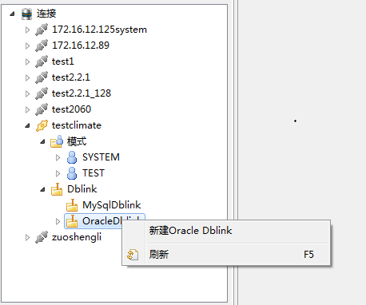
②、单击新建Oracle Dblink，弹出Dblink编辑面板,添加Dblink名称，sid，用户名和密码属性，如下图
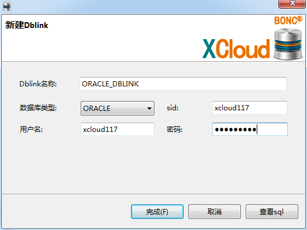
③、点击查看sql ，弹出新建Oracle Dblink脚本面板，如下图
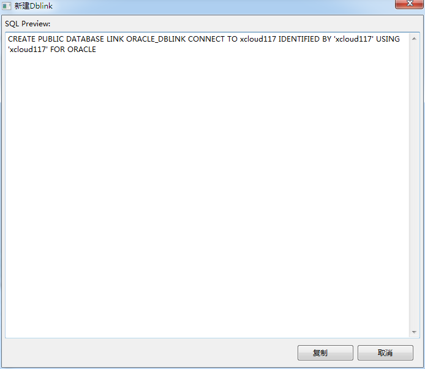
单击复制，脚本自动复制到系统粘贴板上
④、点击完成，实现Dblink的创建
①、右键单击MysqlDblink,出现新建Mysql Dblink菜单，如下图：
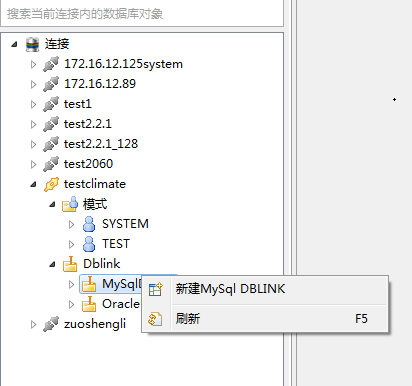
②、单击新建Mysql Dblink，弹出Dblink编辑面板,添加Dblink名称，sid，用户名和密码属性，如下图
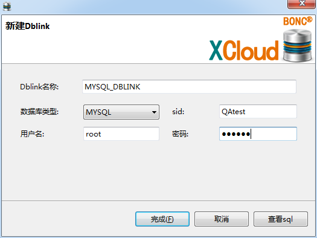
③、点击查看sql ，弹出新建Mysql Dblink脚本面板，如下图
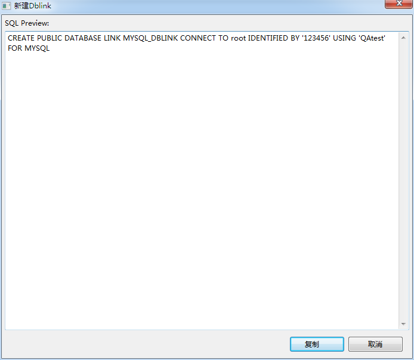
单击复制，脚本自动复制到系统粘贴板上
④、点击完成，实现Dblink的创建
①、右键Dblink节点出现刷新菜单，或右键MysqlDblink与OracleDblink出现各自刷新菜单，如图：
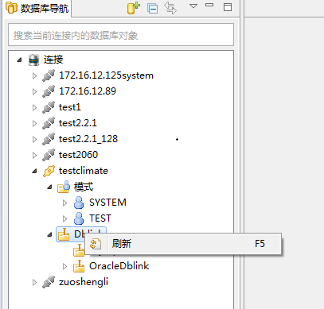
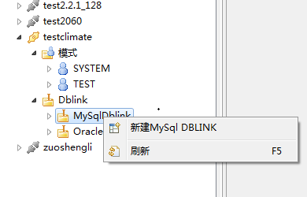
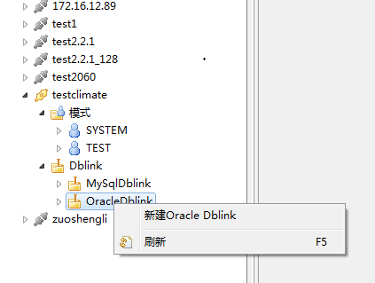
②、右键单击刷新，进行Dblink的刷新
①、右键单击DBlink实例节点，出现删除菜单，如下图：
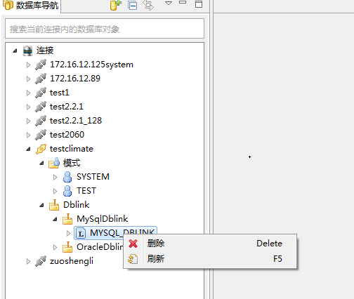
②、单击删除按钮，出现信息提示，如下图：
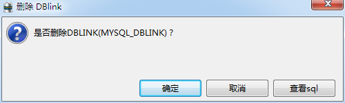
③、单击查看sql，弹出删除DBlink脚本面板，如下图：
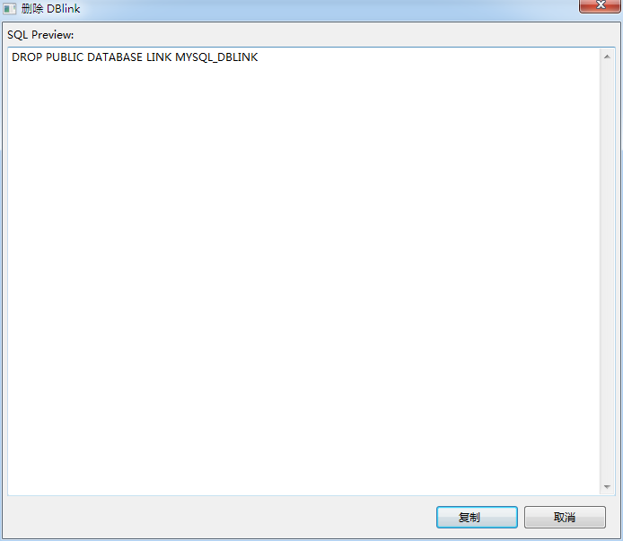
单击复制，脚本自动复制到系统粘贴板上
④、点击确定按钮，删除DBlink节点，如下图：
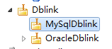
①、右键Dblink节点出现刷新菜单如图：
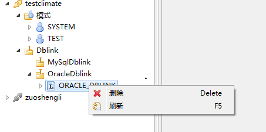
②、右键单击刷新，进行Dblink的刷新